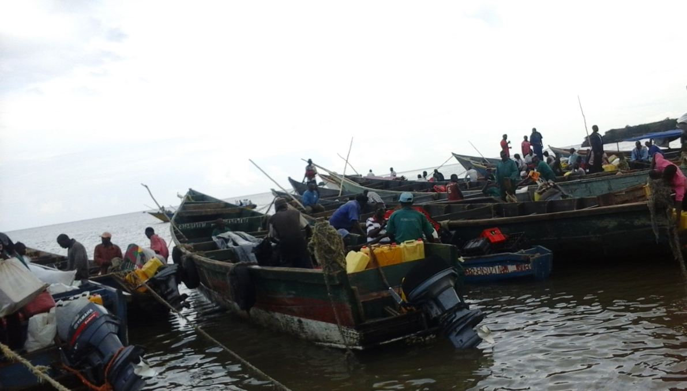

Winning the Global Resilience Challenge
POSTED 15 OCTOBER 2015
One year ago, TAHMO entered the Global Resilience Challenge, a three-stage competitive grant process funded by the Rockefeller Foundation, USAID, and Sida. The challenge is a response to growing recognition that resilience to disasters and chronic crises will be critical to preserving and continuing global efforts to reduce poverty and promote development in the 21st century. Officially:
"The Global Resilience Partnership aims to help millions of vulnerable people in the Sahel, the Horn of Africa, and South and Southeast Asia better adapt to shocks and chronic stresses and invest in a more resilient future. With an initial commitment of $150 million, this new Resilience Partnership will help the global community pivot from being reactive in the wake of disaster to driving evidence-based investments that enable cities, communities, and households to better manage and adapt to inevitable shocks."
TAHMO's proposal
Split between Kenya, Uganda, and Tanzania, Lake Victoria is the largest freshwater body in Africa and the second largest lake in the world. While it's a major source of livelihood for the 30 million people who reside within its watershed, it tragically claims the lives of an estimated 5,000 people every year due to a combination of factors including unpredictable storms (that are worsening with climate change), lack of warning systems, lack of proper safety equipment, and boats prone to capsizing when hit by large waves.
Ugandan fisherman on the shores of Lake Victoria
TAHMO, together with our coalition of partners – Earth Networks, Human Network International, the African Centre for Lighting and Electromagnetics, and the Climate Change Adaptation Innovation – proposed an early warning system to the GRP to help fisherman on Lake Victoria respond to severe storms. Beginning in Uganda, we proposed the following system:
- A network of approximately 100 automatic weather stations will detect lightning and observe other climate variables such as precipitation, wind speed, temperature, and barometric pressure.
- The resultant data will be used to produce forecasts, including severe storm predictions.
- Automated alerts will be sent (free of charge) to fisherman or other people near the lake in the event of a severe storm prediction.
- Due to low rates of smartphone adoption, alerts will be available over a flexible platform that includes voice, SMS, USSD, and radio. Messages will also be available in multiple languages including English and Luganda.
- Fisherman who receive the alerts will have a greater chance of getting to safety before the storm hits, thereby reducing the death toll on the lake.
The process
Our proposal was one of over 500 applications submitted to the GRP during phase I of the challenge. Early this year we received word that we had made the first cut and were one of 17 teams selected for phase II. This required us to expand our initial proposal into detailed problem & solution statements, submitted in March and July of this year, respectively. We took on the challenge to get a prototype system up and running during this phase to demonstrate our ability to succeed in phase III. Finally, on September 27 we received word that we were one of eight teams selected to receive $1 million to implement our proposed solution.
The Global Resilience Challenge was long and arduous but ultimately rewarding (literally). Implementation of our solution will begin in January 2016. We hope that our success will save lives on Lake Victoria and convince the GRP to fund our expansion into Kenya and Tanzania as well. Our warnings do not address all aspects of the problem, but we hope they are part of the solution.